2. Tutorial 2
2.1. Purpose
The purpose of this second tutorial is to further understand the basic functionalities of the Geospatial Microplanning Toolkit (GMT). Previous knowledge is required - you are expected to have worked through Tutorial 1 and that you understand all concepts introduced there.
This tutorial will follow the same principle as the previous one, and additionally we will introduce the following:
Synonyms of health facilities and settlements
Addition of health facilities without a location
Addition of settlement without a location
Addition of settlement where there is no settlement on the map
Review of field data collection
Field data collection - enter collected data
Guides to aid microplanning
2.2. Let’s Get Started!
2.2.1. Preparation
Obtain the data for Ward “Iwoate” in LGA “Ogo Oluwa” in the State “Oyo” and download the data. Navigate to the health facility list. If any of those steps pose trouble, consult the steps in Tutorial 1.
2.2.2. Review the Health Facility list
2.2.2.1. Synonyms
In some cases, a health facility or a settlement may have more than one name it is referred to. Navigate to the health facility detail tab. For the sake of our tutorial, we will give it now a synonym “TestHF1”. Click in the “Add Synonym” field and add this name. Click on “Add”. This synonym has now been added to this health facility.
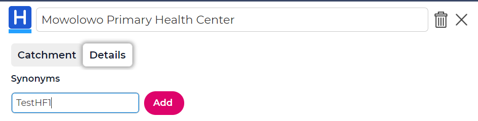
Navigate back to the health facility list. You see now that under the “AKA” column (“Also Known As”) the number of synonyms for this health facility is shown. If you click on the number, the synonyms will be listed.
Note that if you search for the TestHF1 now in the search field, the number will be highlighted, indicating that there is a match.
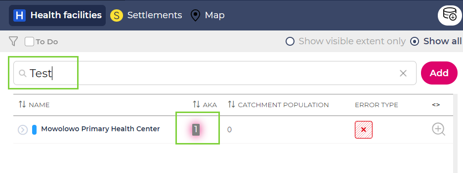
We will see later that the same concept for synonyms also exists for settlements.
2.2.2.2. Adding a Health Facility with no location
Since we will follow the same procedure as for Tutorial 1, we are currently still reviewing our health facility list. Let’s imagine that we know that our Ward has a health facility named “Hospital33”, but we don’t know it’s actual location.
Nevertheless, we can still add “Hospital33”. To do so, type in the “Search” field “Hospital33”. There is no match in the list - this health facility doesn’t exist yet. We can press the “Add” button to add it though. Press the “Add” button.
You will be directed to a new page that shows a table and a couple of buttons. At this point, let’s not worry too much about the table - in short, it shows already existing health facilities in the surroundings. The buttons can be used to put a location to our health facility. We don’t know the location of “Hospital33”. Thus, let’s just click on “Create”.
You will be redirected back to the Health Facility list. Note that your health facility has been added. Since it does not have a location yet, it carries an error icon.
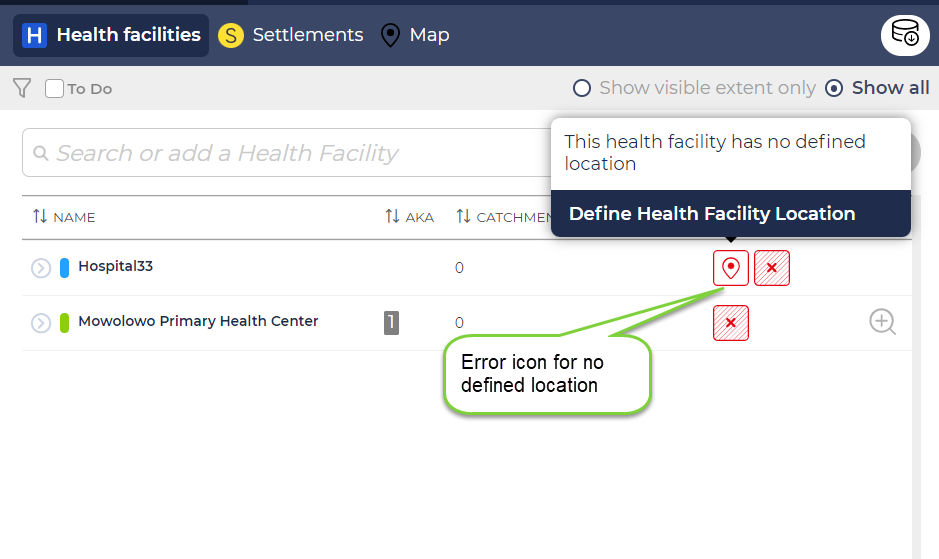
2.2.3. Review the Settlement list
2.2.3.1. Synonyms
Similar to the synonyms for health facilities, there may be several names for one single settlement. Let’s imagine that “Aba Onilu” is also known as “Settlement55”.
Access the settlement detail page for “Aba Onilu” and add the synonym “Settlement55”.
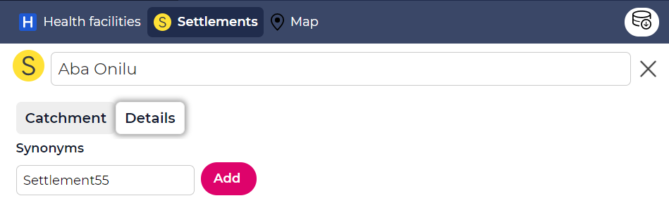
Go back to the settlement list - you will see that Aba Onilu now has a number in the “AKA” column. If you click on it, you will see “Settlement55”. You can search for that settlement name as well. The number will be highlighted.
2.2.3.2. Adding a settlement name
Imagine we have a settlement name “Satigny” in our Ward. However, we don’t know the exact location of it. Let’s add it.
Type “Satigny” in the search bar. Since there will be no match, click on “Add”. Note that this launches a wizard that will guide you through settlement addition.
Click on “Next” in the first step which is merely an information screen. The second step of the wizard will assist if the location of the settlement is known. Since we don’t know the actual location of “Satigny” at this point, let’s continue and click “Next” as well.
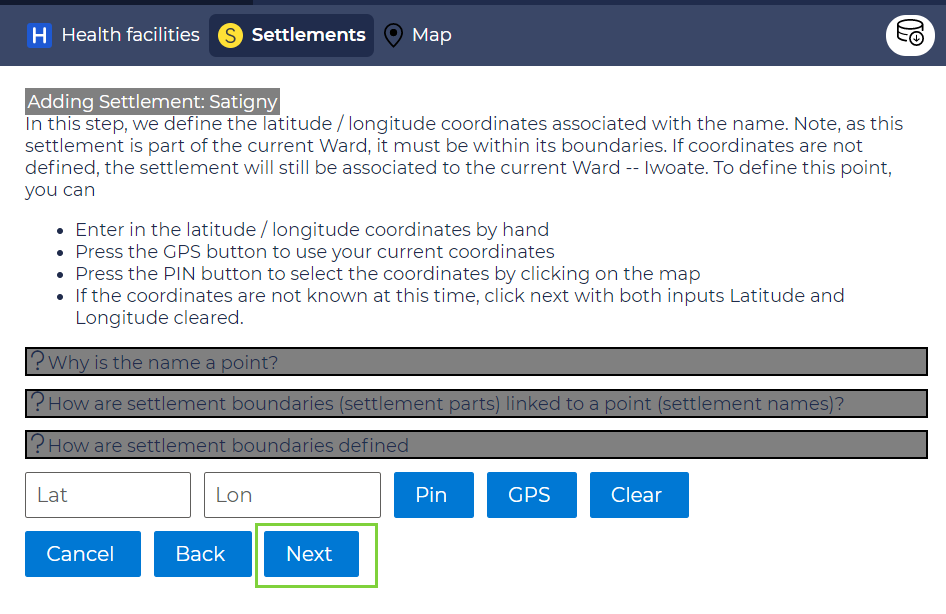
The third step will ensure that there are no settlements in the same Ward or close-by that have an identical or very similar name. The closer a name is, the lower the “Levenshtein distance”. We will see this in a later step.
For now, let’s click “Next”.
On the final screen, read the text and click “Create new”.
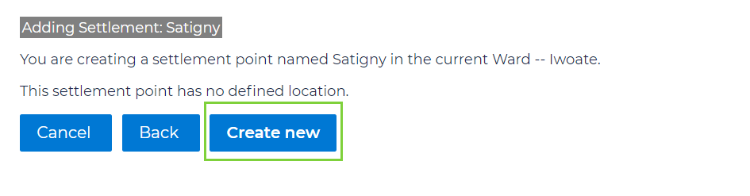
You are guided back to the settlement screen. As you will see, “Satigny” has been added to the list. You see that it has two error icons - it has no location and it also has not been linked to a health facility yet.
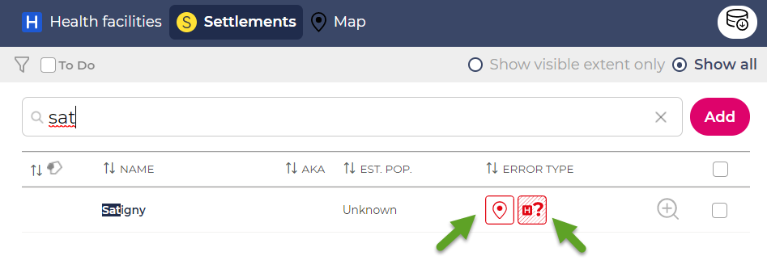
2.2.3.3. Adding a settlement name and location
In the last step, we added a settlement name that we didn’t know the location of. In this step, we imagine that there is one settlement missing on the map - that might be the case if the satellite imagery was not good enough to detect buildings, for instance - you can learn more about that in Background.
For that, follow the same procedure as before. We will add a settlement called “Mowilowa”.
In the first step of the wizard, click “Next” again.
In the second step we are asked to provide a location. We can provide a location by using the “Pin” button. Click on it and select a location on the map on the right. For our purposes, select a location that is remote and where there are no other settlements. Click “Next”.
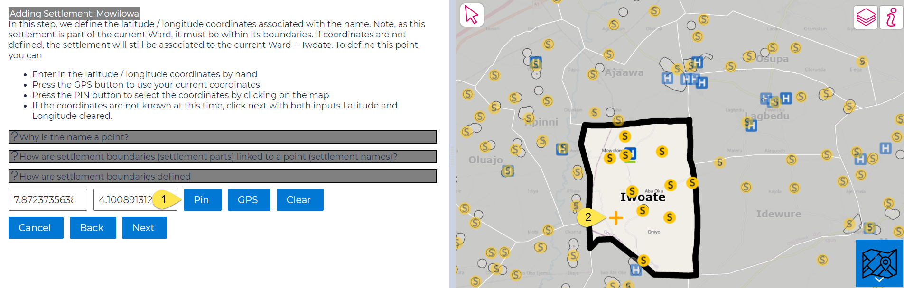
On this screen we are shown a list of the closest settlements around our selected point. This is to ensure that we are not creating a settlement where there is another settlement just next door. The closest settlement here seems to be over 1km away. Click “Next”.
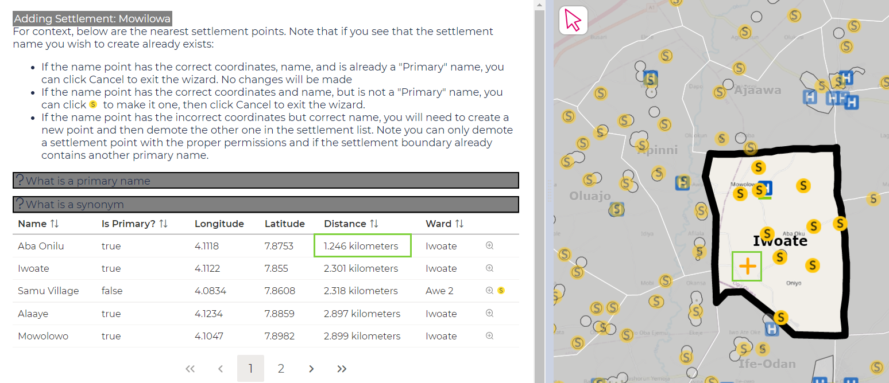
On this screen, we are shown a list of settlement names in the vicinity that are very close to our name - this is to prevent duplicates. The closer a name is, the lower the “Levenshtein distance” value. There is no absolute way to know if a name should be considered a duplicate - but pay attention to this value if it is quite low. Indeed, we see there is a settlement name called “Mowolowo”, very similar to our settlement “Mowilowa”. Let’s assume that our name is not a duplicate and we continue with adding “Mowilowa”. Click “Next”.
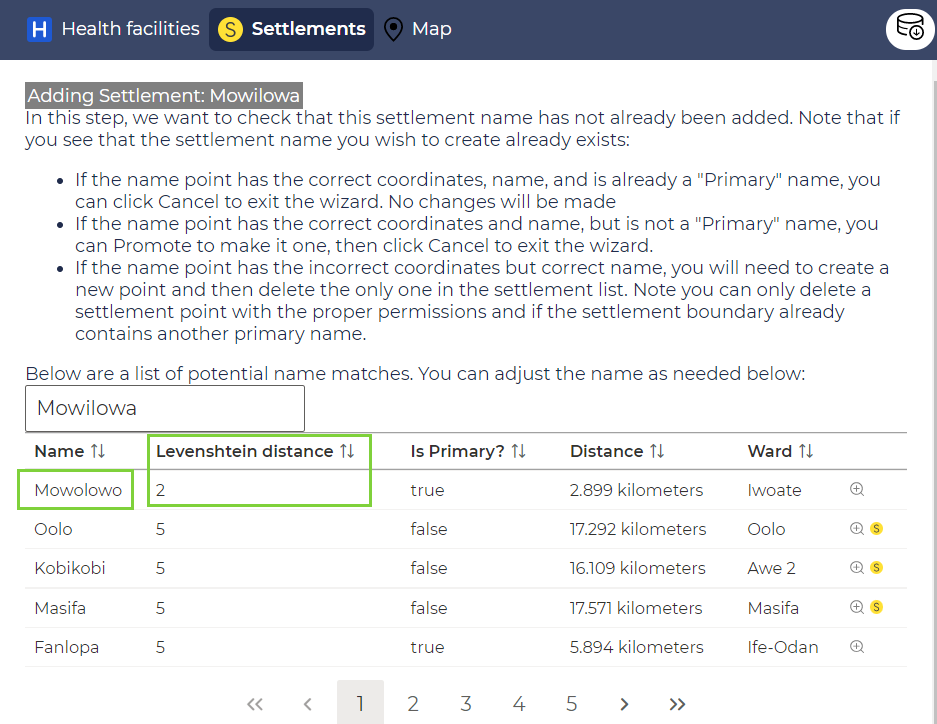
We are about to create a settlement where no settlement existed before. Thus, it would be useful to know the size and population of this settlement. In this step you have the possibility to add a population value. Add 5000 here and click “Next”.
Finally, on the last screen, you get a summary of what you are about to do. If all the information is correct, click on “Create New”. You will see that “Mowilowa” has now been added as a new settlement. Note that the new settlement has been created as a circle with 200m diameter, since the shape of the settlement is unknown.
2.2.4. Field Data Collection
We have now reached the point where we have entered all the information we have had upfront for this ward. However, we are not yet quite ready to perform our microplanning: there are still a couple of issues on our health facility and our settlement lists.
You can highlight the issues that remain by clicking on “To Do”.
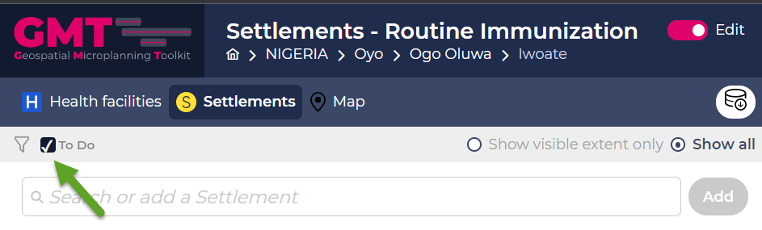
Click it in the settlement list. Since we have not defined any catchments, all settlements still appear in the “To Do” list, as this is part of the tasks we need to do. This is indicated via the error icon “Unclaimed” for settlements.
However, you also see that some settlements still have other error icons such as “Satigny” which is missing a location as well as others that have machine generated names. Remember that we also have a health facility that has no location currently.
In order to obtain the information for those places, we can access the “Field Data Collection” page. To do so, click on the field data collection icon.
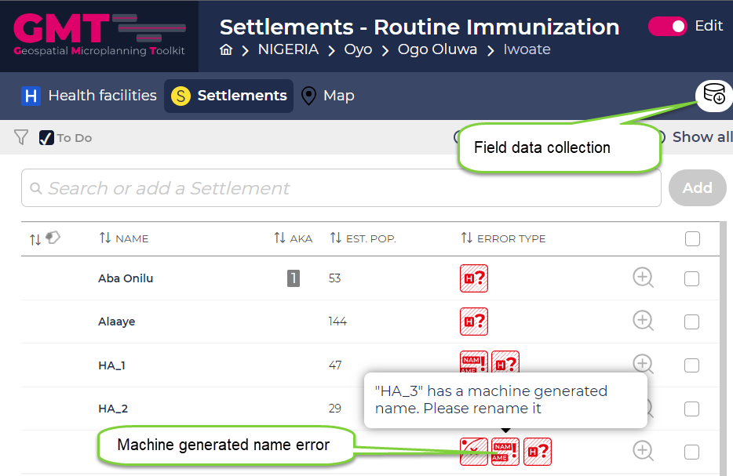
This page informs about all the places that still need a location or a name.
For the sake of our tutorial, add the missing information for all the settlements. In this tutorial, the settlements have been renamed to “NoMachine”.
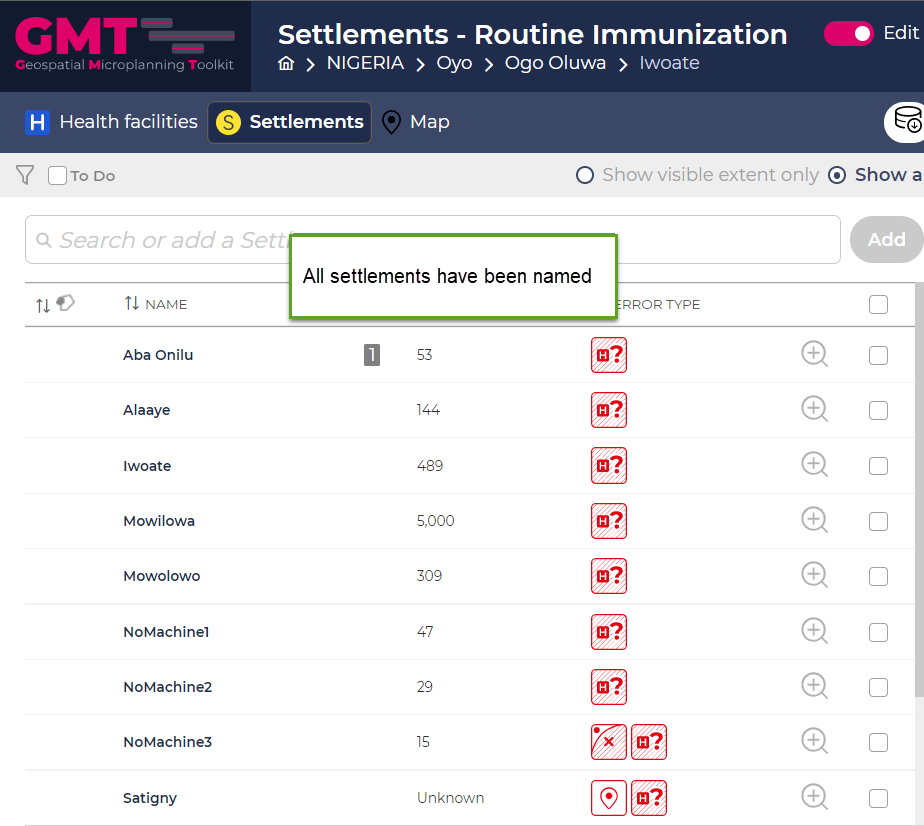
Add the missing information for “Hospital33”, give it a location. You can do that by clicking on the error icon and clicking on the map to specify the location. In this tutorial, it has been placed in the South.
We imagine that someone went to all of these places to collect the correct information and that we have obtained this information now.
2.2.5. Perform microplanning
Since all data has now been “collected”, we can perform our microplanning. Note that in some cases, a settlement still might have an error icon that remains apart from the “Unclaimed” icon. Let’s not worry about this for now.
We have now two health facilities in our Ward - “Hospital33” and “Mowolowo PHC”. Let’s go first to the catchment tab of “Hospital33”.
Look at the “Suggested Settlements” list. You can choose whether this list should be filtered by Travel time by walking, travel time by car or distance. For now, let’s use distance. Set the threshold to 2km. Note that the list is now filtered accordingly. Add all settlements within our Ward to the catchment. Zoom on the map to the health facility to see how the catchment changes.
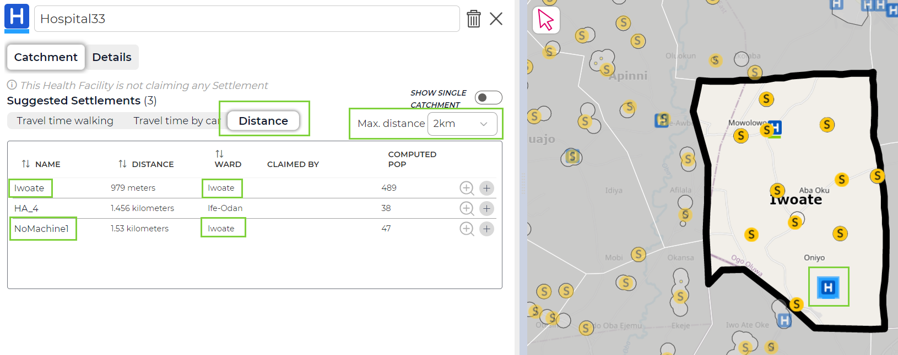
2.2.5.1. Guides - Distance
To help you visualize on the map which settlements fall within the 2km radius of a health facility, there are visualization guides available on the microplan map. Click on the legend and select “Guides - Distance”.
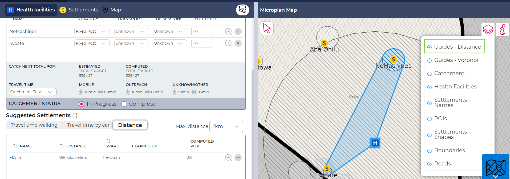
The guides show per default for all health facilities (zoom in and out on the map to see that). You can change that: click on the “Show Single Catchment” button within the health facility catchment tab to restrict the guide to the health facility you are currently looking at. Clicking on another health facility now on the microplan map will also only show the guide for that health facility.
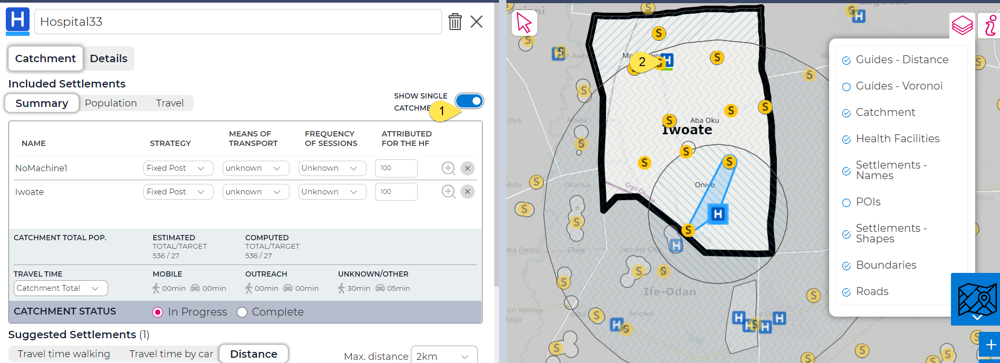
Note the strategy for all of those settlements is per default “Fixed-Post”. If necessary, you can change this.
Next, set the distance threshold to 5km. Note how the list updates. You could add those settlements within our current Ward as well to this health facility and set the strategy to “Outreach”. However, in this case you may be adding settlements that fall within the catchment of another health facility. Thus, let us look at yet another visualization help.
2.2.5.2. Guides - Voronoi
To decide if a settlement is closer to one health facility or another, we can visualize all points around a health facility that are closer to this health facility than any other. To do that, deactivate the “Guides - Distance” on the legend and activate “Guides - Voronoi”. You will now see a pattern that shows for each health facility the areas that contain settlements that are closer to it than any other health facility.
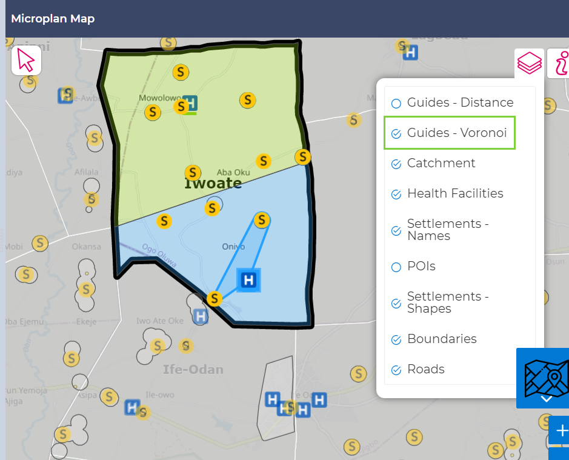
Using the two above guides, you can now assign all settlements to the two health facilities.
Once you think you are done, go the settlement list. Check if there is any remaining error icon “Unclaimed”. If not, you have added all settlements to a catchment and your microplan has been completed. You can review it on the map, or on the health facility catchment details. Here is an example:
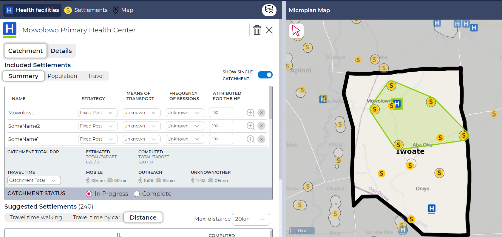
Again, you can switch between “Show Single Catchment” and all catchments.
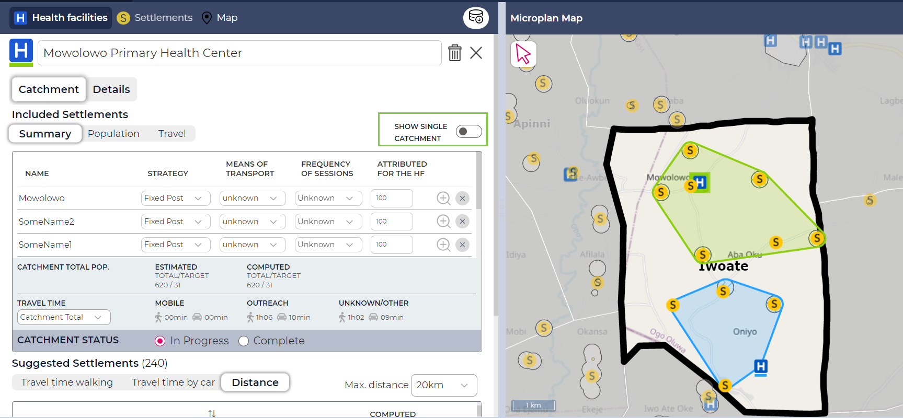
It may be that during the process above, you have assigned a settlement to two health facilities. In that case you might see another error icon. Let’s not worry about that for now, we will look at this in a later tutorial.
In the health facility catchment tab, mark both health facilities catchments as “Complete”.
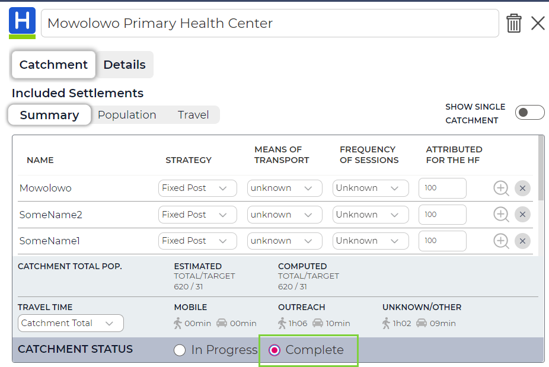
You can now print the PDF of the microplan in the same way we did in Tutorial 1. Note that since we have two health facilities in our Ward, the PDF will contain one page for each health facility.
Important
You reached the end of Tutorial 2!